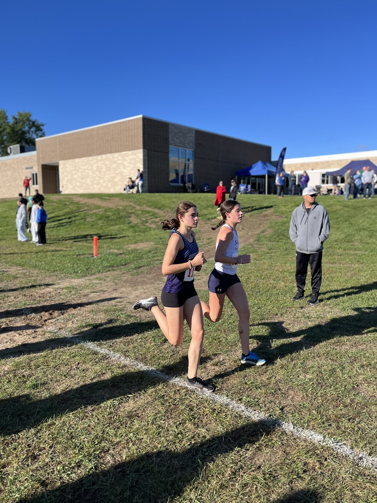

Grade 10 Athletes
Team Scores
| Place | Team | Score |
|---|---|---|
| 1 | Ypsilanti Lincoln | 22 |
| 2 | Saline | 73 |
| 3 | Dexter | 81 |
Results
Julianna Richards
Place: 4.
Grade: 10
Time: 23:32.50
Team: Dexter

Mae Barbaro
Place: 11.
Grade: 10
Time: 24:11.50
Team: Dexter
Isabel McEwen
Place: 15.
Grade: 10
Time: 24:24.80
Team: Ann Arbor Pioneer

Mia Washington
Place: 18.
Grade: 10
Time: 24:37.00
Team: Saline
Chloe Tuttle
Place: 27.
Grade: 10
Time: 25:24.40
Team: Ann Arbor Huron
Ruthie Scott
Place: 31.
Grade: 10
Time: 25:31.00
Team: Ann Arbor Skyline
Claire Chivens
Place: 36.
Grade: 10
Time: 25:48.60
Team: Ann Arbor Pioneer
Megan Cabble
Place: 38.
Grade: 10
Time: 25:58.60
Team: Dexter
Emma Allis
Place: 45.
Grade: 10
Time: 26:39.60
Team: Saline
Sylvia Irwin
Place: 46.
Grade: 10
Time: 26:46.10
Team: Ann Arbor Huron
Addison Wroblewski
Place: 50.
Grade: 10
Time: 27:02.10
Team: Pinckney
Beatrice Staunton
Place: 53.
Grade: 10
Time: 27:17.90
Team: Ann Arbor Huron
Julia Schairbaum
Place: 65.
Grade: 10
Time: 28:23.60
Team: Ann Arbor Pioneer
Kate Karsies
Place: 69.
Grade: 10
Time: 28:34.50
Team: Pinckney
Lily Greenberg
Place: 70.
Grade: 10
Time: 28:39.70
Team: Ann Arbor Skyline
Dahlia Dell'Orco
Place: 81.
Grade: 10
Time: 30:15.60
Team: Saline
Flora McElroy
Place: 82.
Grade: 10
Time: 30:17.60
Team: Dexter
Seahyun Ko
Place: 86.
Grade: 10
Time: 31:13.10
Team: Ann Arbor Huron
Elizabeth Giles
Place: 90.
Grade: 10
Time: 32:30.50
Team: Saline
Moira Laundree
Place: 91.
Grade: 10
Time: 32:37.00
Team: Saline
Brooke Simon
Place: 94.
Grade: 10
Time: 33:14.20
Team: Saline
Grace Krugh
Place: 97.
Grade: 10
Time: 33:52.10
Team: Chelsea